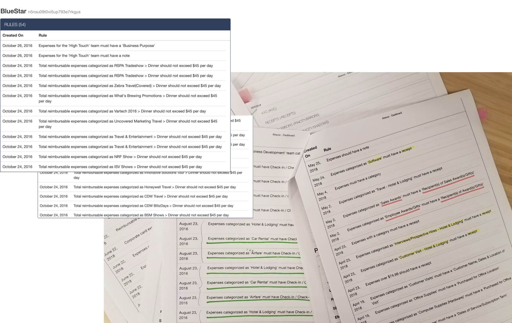

MODAL REDESIGN
Study & Research
Redesigning the rule-creation modal was the most UX-heavy part of the project. It involves redesigning the entire information architecture of rule creation modal, from which criterion we start the user with to which rules could be logically grouped together. I started tackling this by analyzing our old rule creation modal’s architecture:

I also used our internal dashboard, Abadash, to look up and study the rules of 10 differents companies with 20+ rules. By doing close rule sentence analysis, I started drawing patterns about one common rule formula.

Redesign Modal's IA
I came to understand that part of the reason why it was difficult to use the old rule creation was because it was so dense with unstructured content. In addition, users aren't able to preview the rule they're trying to construct. I decided to separate the rule creation flow into 3 parts:
- <span class='bold'>Select</span> a rule type (requirement, budget, or time limit)
- <span class='bold'>Construct</span> the rule based on its type
- <span class='bold'>Preview</span> the rule and make adjustments if needed
Check out a detailed explanation of the first 2 steps in the proposed new information architecture below:

Redesign Modal's UI
After my proposal for a new modal's architecture was approved, I started working on the new rule modal's UI. There were serveral UI concepts. I was working with both horizontal and verticle modal wizards. After a couple of reviews, we decided to go with the concept below.